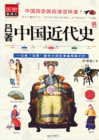
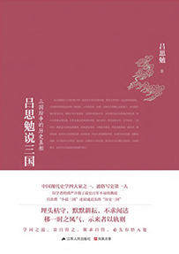

01
读历史有用吗？这或许是萦绕在很多人心头的世纪疑问。
众所周知，历史的内容是广泛而庞杂的，古人就曾发出“一部十七史，不知从何说起”的感慨。
在我们成长的过程中，每个人都会或多或少地接触历史，但为什么不同的人从同一历史事件中读出的信息千差万别呢？其实，我们真正缺乏的不是大量的历史知识，而是建立在独立思考之上的历史观。
读历史，如果只是停留在“看过了，知道了，记住了，又忘记了”的层面，确实没什么太大意义。更可况，如果不小心选了本观点谬误、内容冗余的史书，反而会毒害身心健康甚至影响人格发展。那还不如不读！
但是，有这样一个人，他写的中国史，视角新颖、凝练而不失客观、趣味性强、实用性强，不仅能引导你思考历史事件失败之原因，成功之法门，更能串联起社会、民族、文化、学术、经学、理学、政治思想等诸多领域，让你在大致掌握整个中国历史的线索脉络的同时，极大地开阔视野和眼界。
读过他写的中国史，你将从以大历史观为重的视角出发，不需刻意记忆琐碎的时间点，也不用追溯没有营养的旁枝末节，而是自由地采撷为人处世的大智慧，沉淀出属于自己的新观点，人生也将变得更加豁达与通透！
那么，这个人究竟是谁呢？
吕著中国近代史（吕思勉）
国学大师吕思勉博通周瞻之作。
历史看得见，中国历史就该这样读！
《吕著中国近代史》包括《中国近代史讲义》、《中
国近世史前编》、《中国近百年史概说》、《中国近世文
化史补编》、《日俄战争》五种。为广大读者研究中国近
代史提供了宝贵资料。

02
他，
是中国著名的史学家，与陈垣、陈寅恪、钱穆一起被誉为“现代史学四大家”。
他，
开创了通史写作的新纪元，编撰了我国历史上首部用白话文写成的中国通史，并长期被用作大学教材及青年“自修”读物。
他所编写的《中国通史》是华人世界公认的国史巨著，钱穆、易中天、黄仁宇、柏杨等大家对其推崇备至。
可以毫不夸张地说，中国通史之所以能够成为一门可讲可读的课程、成为青年学生以及普通读者的国史入门读本，这个人绝对是功不可没！
他就是吕思勉，一个敢于反问历史的史学家，一个拥有独立见解的著书人，一个毕生辗转多所学府、拥有五十余年讲台经验的教书匠。
在历史研究方面，他的骨子里始终透着一种“吾将上下而求索”的探索精神和开拓精神。在著书、教学方面，他不偏听，不盲信，执着于拨开覆盖在历史上的迷雾，找寻到真正的历史。
与大多数职业历史学家不同，他不但懂得如何广博地涉猎历史、研究历史，而且深谙通过何种方式讲解历史，才能让人们更喜欢读历史、并在生活中用得到。
他的这种编书育人相结合的经历，在现代史学名家大家中是极为罕见的。而这也恰恰成就了他。
因此，对于每一个中国史爱好者或狂热者来说，读吕思勉的历史系列书再
吕思勉说三国
——三国纷争的历史真相
中国现代史学四大家之一，通俗写史第一人：
吕思勉先生力作，首次将“小说三国”还原成真实
的“历史三国”——易中天品三国的重要参考资料，
揭秘、还原真实的三国史。

03
吕思勉先生认为：学习历史，应该是在理解的基础上获得一个历史的轮廓，而不在于史事记忆上的多少，也不在求其详细。正是受这种先进观念的影响，他编撰的通史著述，都自带一种“居高临下”“登楼远眺”的大局观。
以《中国通史》为例，该书是第一部用进化史观编纂的国史教材，吕思勉在书中依据进化史观点对婚姻、官制、赋税、兵制等进行了精彩阐述，证明了人类社会是在不断的进化之中发展前进的，为今后史学家发展指明了方向，该书的地位堪称是中国史学界的《物种起源》！
除此之外，他还是一位文史底蕴深厚的国宝级史学大师。他的女儿吕翼仁回忆道：“父亲是在广泛研究社会科学基础上治史的，以治史的人而论，眼光就比较宽。眼界宽，看事情容易融会贯通，以横的角度来说，就能着眼于事情的变化发展；从纵的角度来说，也有利于比较研究。父亲所以能在通史方面做出较大的贡献，说不定和他治学方法有关。父亲早年就认为历史的基础是社会科学，在研究历史之前，对各种社会科学应当多少懂一点。”
得益于广泛的涉猎和知识积累，吕思勉的治史方法和史学观点，总能给人带来一种沉疴顿愈、豁然开朗的思维快感。这也是为什么很多有成就的人，都十分喜爱他所编写的史书的重要原因！
民国大师细说中国史
本书所选的大师都是时之俊才，多是研究历史的
行家里手。民国时期的那些大师所写的历史，因为对
历史的熟读、材料占有的广博、研究的深入、引证的
精到，写起来往往驾轻就熟，读起来也入得了俗，他
们所写的历史既正统，也见解深刻；每个朝代所选的
作品都具有代表性。
04
历史是应该被珍视的宝藏，是通贯古今、折射前人智慧的镜子。
吕思勉先生的通史著述，大都具有“大视野、通识感，而不拘泥于局部细节”的鲜明特色，让人读完之后忍不住直呼过瘾。
历史通常埋身于岁月的深处，就让我们一起走进这位史学泰斗的历史世界，和他一起抽丝剥茧，采撷国史中蕴含的处世智慧，进而在读史中明智，学古以鉴今！